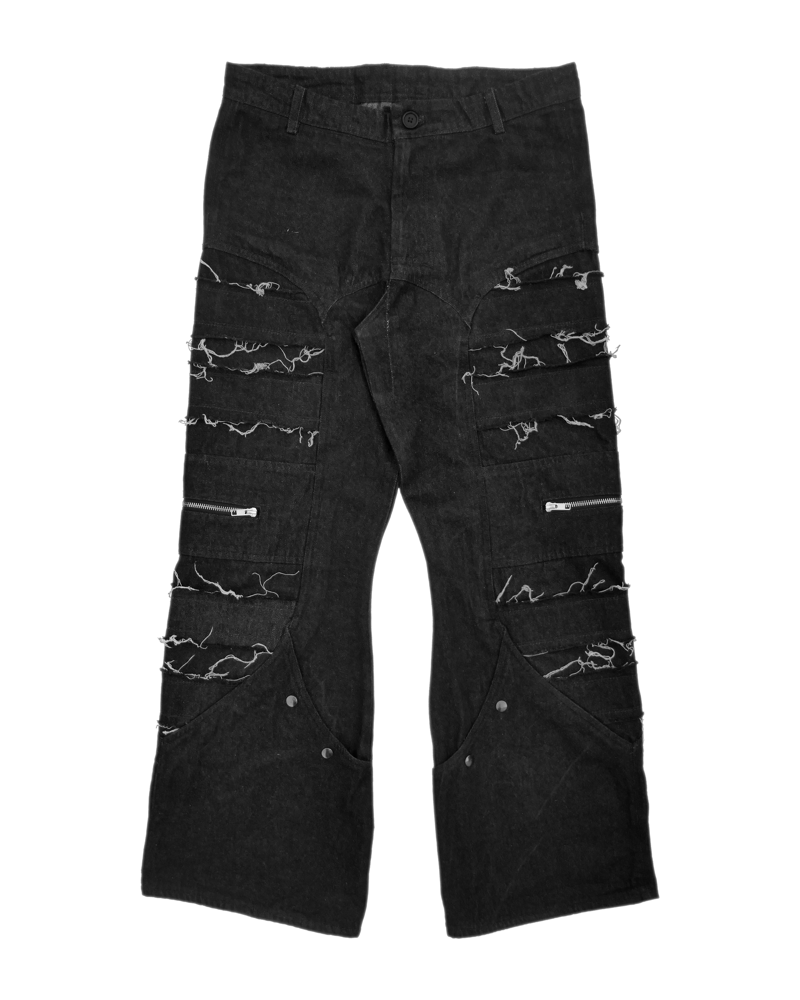
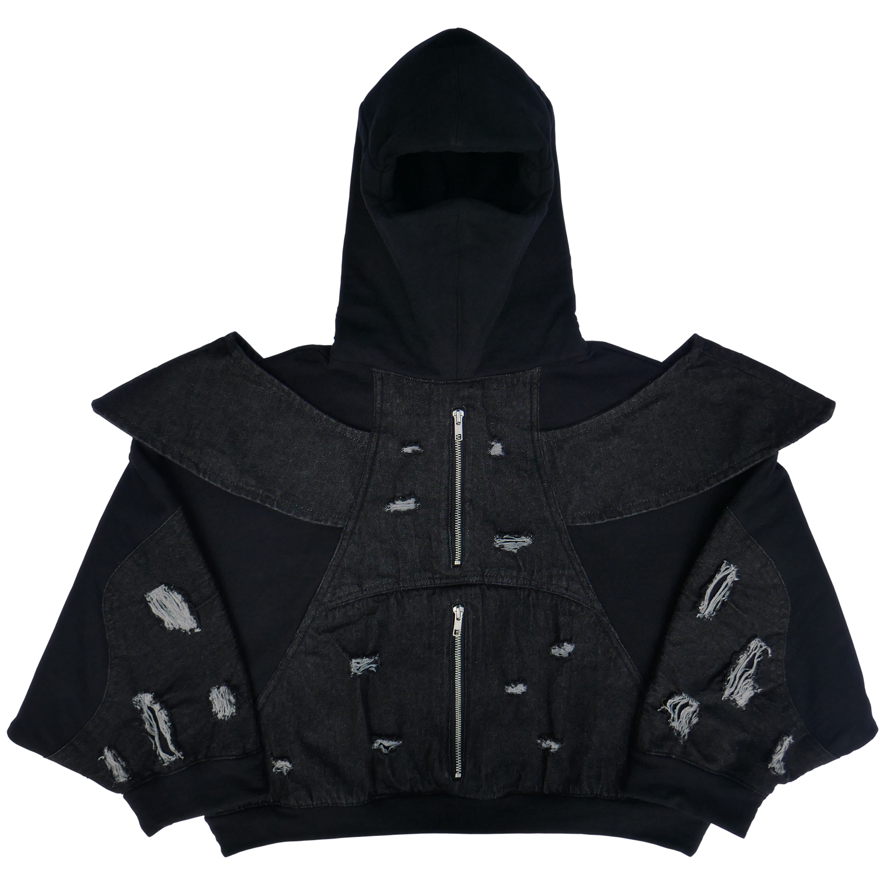
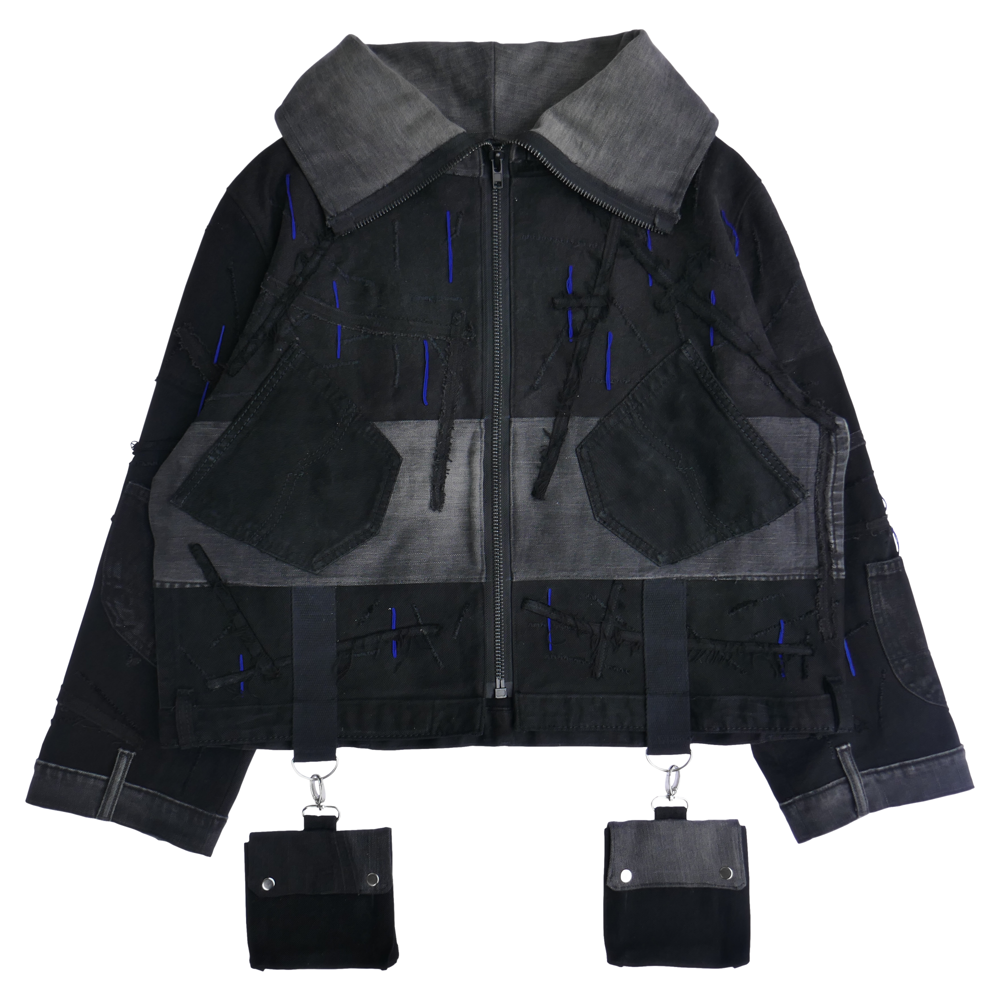
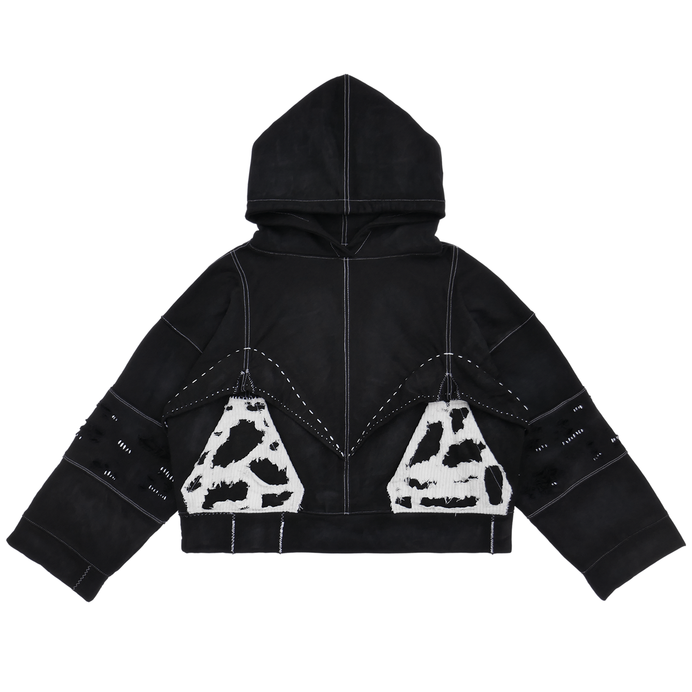

COUTURE
Les vêtements ci-dessous sont faits par mes soins de A à Z, de la création des patrons jusqu'à l'assemblage.
〔 currently__l̶͚̽e̯ͦ̀ą̰̫̄͑͞r̢̛̳͎͕ͭ̽̉͘n̴̷̹͈̻͙̂̂̿ͦ͘͞i̲̭̹ͫ̿̎́͠͝n̞̖̽̌͝͞g̖ͩ͡ 〕

SPECS
- Made with 100% cotton denim and YKK zippers
- Designed in Clo3D
- Straight-leg cut with a slight knee taper on the inseam.
- Outseam denim panel with distressing details
- Two zipper pockets with a lining
- Two button pockets at the end of the leg
〔 feelin_lͥ҉͔o̧͎͗͠ň̜͎͠e̵̲ͮ̿̀ļ̨̞͈ͪy̧̰͆̓ 〕

SPECS
- Made with 100% cotton French Terry (450gsm), 100% cotton denim, and YKK zippers
- Designed in Clo3D
- Bat sleeves
- Two zipper pockets with a lining
- Full hood
- Distressing details
〔 o̵̻̺̼̎c̷̢̤̞̪̿̀t̛̥̓o̴̺͕͒̅b̡̖̯̾̉̔͠e̴̸̮͌͋ͧr̷͇̉_to_f̢̯̯̎͝e̺̹͂͠b̪͇̋̅́r̚҉̛̼u̵̴͓̓ͩȃ̢͈ȑ̴̜́ͤy̅͊҉ 〕

SPECS
- Reconstructed from three upcycled jeans
- Comes with two detachable pockets
- Distressing details
- Blue thread embroidery
〔 what_r̶̡̜͙͔̊͟ȩ̵̴͚͙̥̎m̫͊͘͜͢ͅä́̎̕͏͏͙͎i̢̛̩̎͌͜n̨̢̬ͮ͌̀͠s̀͗̈͘҉҉̱ 〕

SPECS
- Made with 100% cotton French Terry (460gsm) and with some corduroy
- Nyokitto
- Sashiko stitching
- Hand-stonewashing process